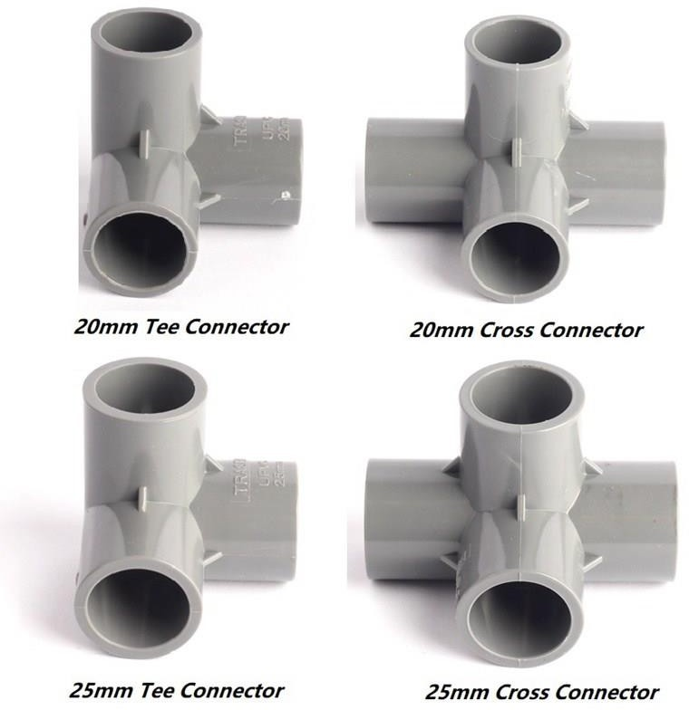
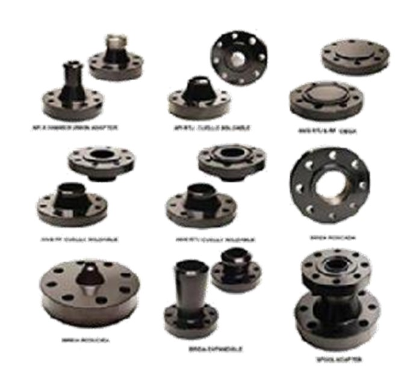
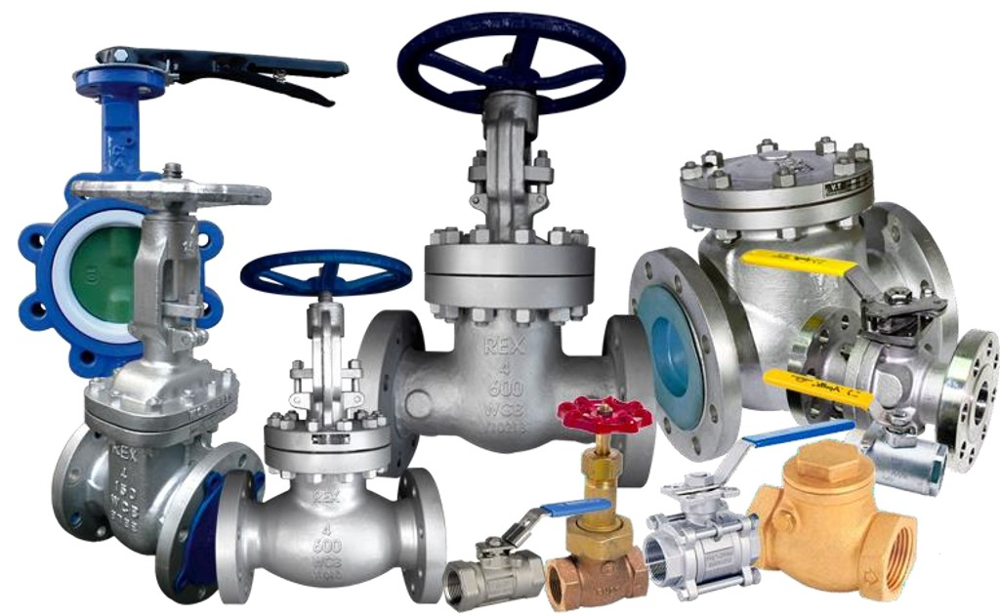
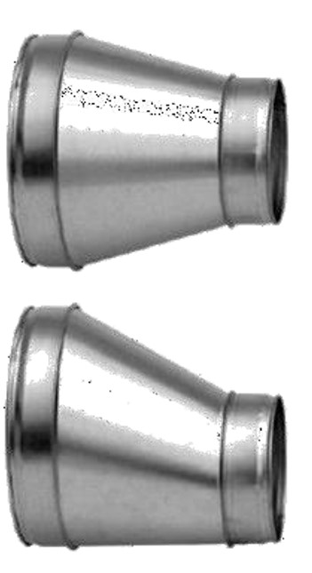
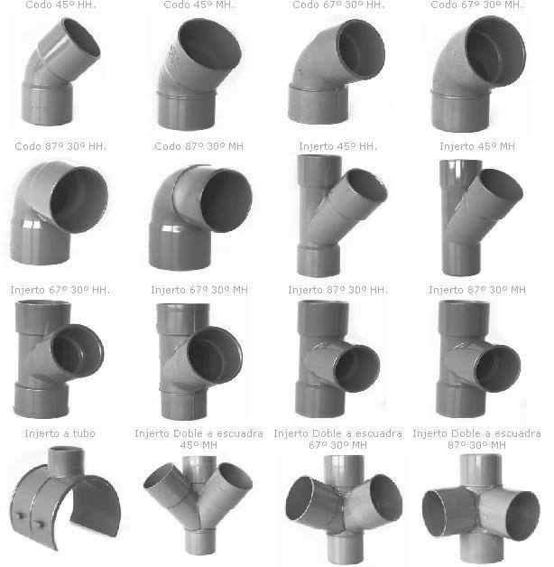
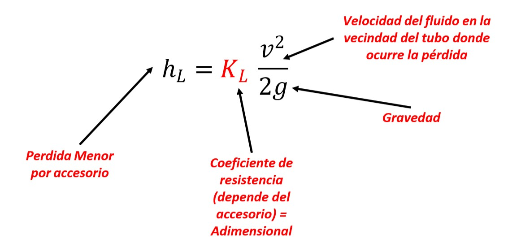
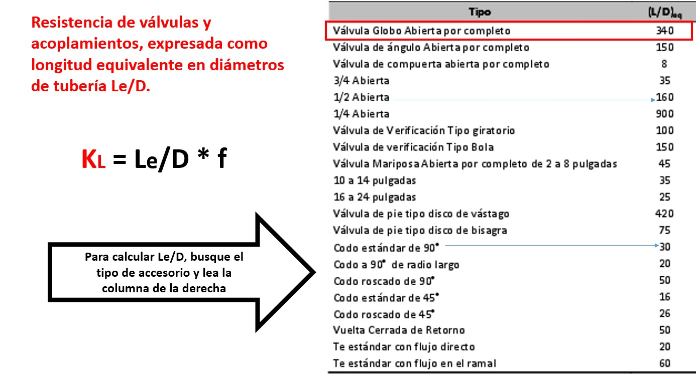
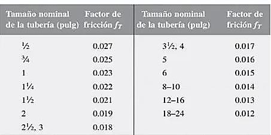
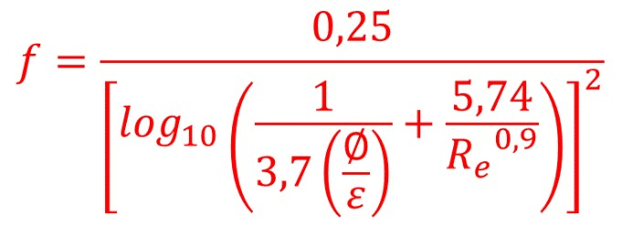
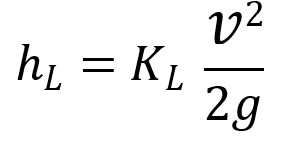

Accesorios en sistemas de tuberías



Las pérdidas menores se expresan en términos del coeficiente de pérdida KL (también llamado coeficiente de resistencia), que se define como

Factor de fricción en la zona de turbulencia completa para tubería de acero comercial, nueva y limpia.

Si la tubería estuviera hecha de un material diferente de acero comercial, nueva y limpia, sería necesario calcular la rugosidad relativa D/e, y después usar el diagrama de Moody para determinar el factor de fricción en la zona de turbulencia completa.
Factor de fricción en la zona de turbulencia completa para tubería diferentes a acero comercial, nuevo y limpia se deben seguir los siguientes pasos.
- Determinar la rugosidad relativa, es decir dividir D/ε, el diámetro sobre la rugosidad (ε)
- Una vez determinada la rugosidad relativa aplicar la siguiente ecuación, donde el termino Re es igual a 1x108

Procedimiento para calcular la pérdida de energía que causan las válvulas y accesorios de acoplamientos, por medio de la ecuación

1. En la tabla “Resistencia de válvulas y acoplamientos, expresada como longitud equivalente en diámetros de tubería Le/D”, encontrar Le/D para la válvula o acoplamiento.
2a. Si la tubería es de acero nueva y limpia:
En la tabla “Factor de fricción en la zona de turbulencia completa para tubería de acero comercial, nueva y limpia” encontrar fT
2b. Para tubos de otros materiales:
Determinar la rugosidad e del tubo
Emplear la ecuación explicita, para determinar fT en la zona de turbulencia completa.
3. Calcular K = fT (Le/D).
4. Calcular hL = K(v2 /2g), donde v es la velocidad en el tubo.
Rodríguez Castro, L. (2021). Mecánica de Fluidos ingeniería electromecánica facultad de ciencias naturales e ingeniería. 1 ed., pág 54-114. Barrancabermeja. Unidades Tecnológicas de Santander